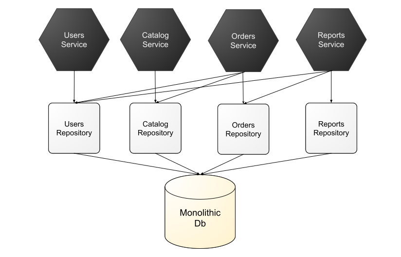
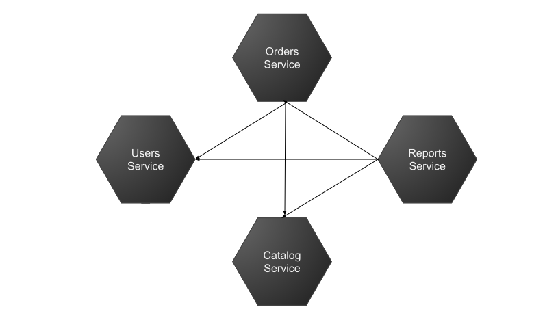
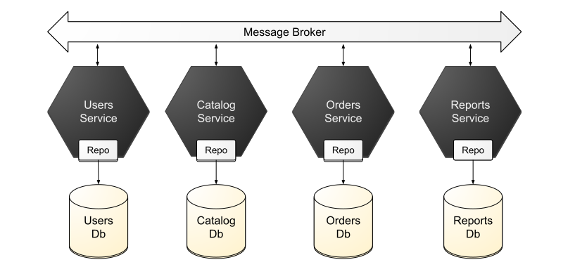
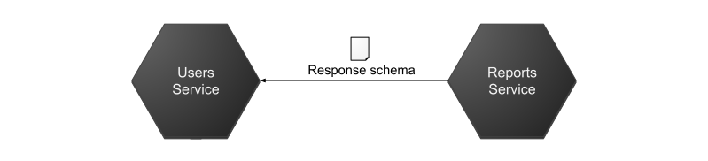
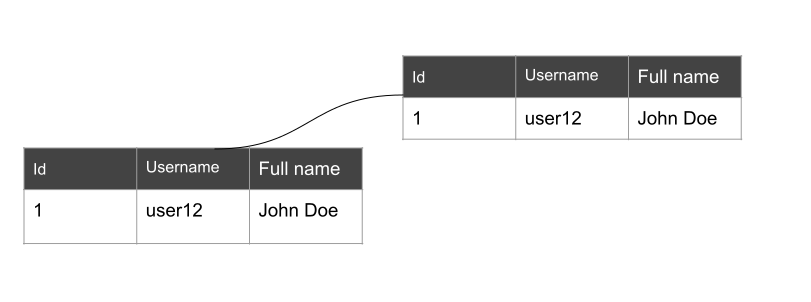
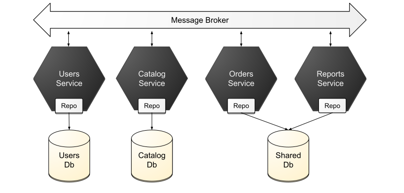

When building a monolith, it’s common to not think much about which service accesses which tables, especially when dealing with complex business logic that needs to conditionally update data based on values of existing data, or if complex data aggregation is needed. To make matters worse, in many projects, not a lot of thought is given to how the database is structured, and it might not actually align well with the business domain (especially if DDD techniques are not followed). Even if the database aligns to the domain, there are still complex relationships involving the data.
A common antipattern I see is different repositories being injected into services, with no defined data ownership.
Let’s try to rewrite that a bit so that we don’t violate encapsulation of the services. What this means is we inject references to the other services and we use them like that.
So what would be the goal, when trying to split our monolithic application into individual microservices? The goal would be a setup similar to this, where each microservice owns its own data, each service has a high degree of cohesion, and the system as a whole is decoupled.
By splitting our database in smaller databases, we lose a lot of benefits associated with FK constraints, as well as ACID guarantees, but that is a price we need to pay. Distributed architectures rely heavily on eventual consistency as a trade-off for better operational architecture characteristics such as performance, scalability, elasticity, fault tolerance, and availability.
The Goal Is BASE Not ACID
BASE means:
- Basically Available means that the system should remain operational and responsive, even in the face of failures. It prioritizes availability over consistency. In other words, the system might return slightly outdated or inconsistent data during certain operations, but it ensures that the system remains accessible and operational.
- Soft state refers to the idea that the state of the system may change over time, even without input. Unlike in ACID systems, where the state is always consistent and deterministic, in BASE systems, the state might be transient or mutable. This allows for more flexible and scalable designs, particularly in distributed systems where maintaining strong consistency across all nodes can be challenging.
- Eventually consistency means that the system will eventually reach a consistent state after a period of time, given no further input. Unlike the immediate consistency guaranteed by ACID transactions, eventual consistency allows for temporary inconsistencies between different replicas or partitions of data. Over time, through mechanisms like gossip protocols, reconciliation, or background processes, these inconsistencies are resolved, and the system converges to a consistent state.
So as we can see, the constraints on consistency are much weaker. Let’s now look at some patterns for sharing data between services.
Interservice Communication Pattern
The simplest form of microservice communication is for one microservice to call another one directly. The main advantage of this approach is simplicity.
 ( In this case, the reports microservice needs some data from the user service (in order to generate reports for a specific user), and in order to get it, it makes a direct call to that service.Keep in mind there are quite a few drawbacks.
- Tight coupling. If service A depends on service B, any schema change in the response will affect it. Consider that a central tenet of microservices is being able to individually develop and deploy them, this form of tight coupling can cause problems.
- Scalability issues. A benefit of independent microservices is they can also be scaled independently. But if a service depends on another service, that service can become a performance bottleneck.
- Single point of failure. The 3rd party service might have crashed, which in turn takes down the services using it.
Direct communication is usually used with the orchestration pattern, where an orchestrator (sometimes called a mediator) makes direct calls to the other microservices.
Data Duplication Pattern
In order to avoid direct calls between microservices, we can duplicate data. In our above example, the reports service would store its own user summary table in its own database.
The main drawback of this is async code is harder to maintain and to understand that synchronous code.
Data Domain Pattern
The last resort is to use a shared database. This is called the data domain pattern, but it might as well be an antipattern. It is mainly encountered when attempting to decouple a monolith application, and some parts of the domain model cannot be easily pulled apart.
Keep in mind that this has significant disadvantages.
- Breaks encapsulation. While calling the database directly avoids an extra round-trip to a different service (and the dependence on that service), keep in mind that there might be logic that controls what data is being exposed, and going directly to the data layer might circumvent it. This is a problem.
- Indirect coupling. Avoiding the microservice call doesn’t mean there isn’t any coupling, it just means that it’s hidden. This means that you can’t really have two independent teams or developers working on the
- Migrations. A lot of codebases use code first migrations, which means that you probably want to designate an owner of the data model, but different. What can be done here is to have a master service, and secondary ones that don’t touch the schema, but this needs to be clearly indicated.
In Closing
There is no magic bullet approach where you can just use one approach, and you will almost always end up using all of them. I fact, what usually when you are decoupling your monolith is you will have remanants of this monolith that are not easy to break apart into smaller chunks. Keep in mind that since the goal is high cohesion, you might not want to actually break apart some parts of your monolith. As a rule of thumb: if a certain piece is hard to pull apart, maybe it shouldn’t be.